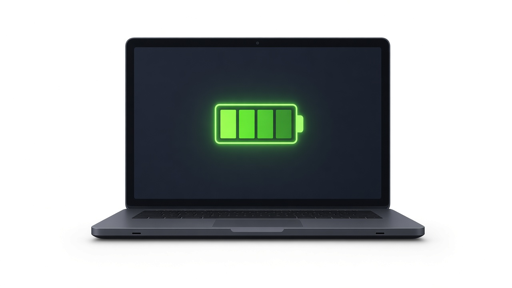
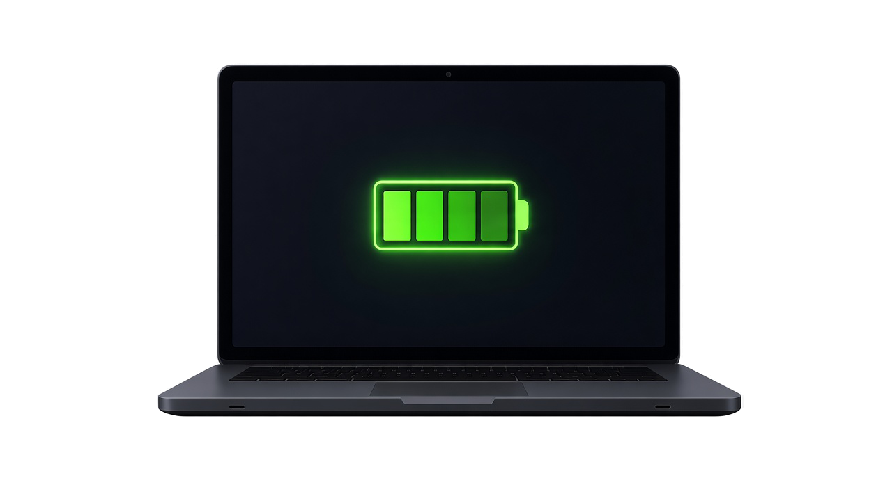

How to Extend Laptop Battery Life on Windows (2026 Guide)


Lithium-ion laptop batteries naturally lose capacity over time. The speed of that decline depends on how the battery is charged, used, and stored.
While chemical aging cannot be stopped entirely, a few daily habits can help slow capacity loss. Setting up simple charging thresholds based on battery chemistry can preserve usable capacity across years of normal use.
This guide explains why laptop batteries age, how the 20-80 battery rule works, how to use the built-in Windows battery report, and how monitoring tools make long-term battery care easier.
Why Laptop Batteries Degrade Over Time
Modern laptops use lithium-ion or lithium-polymer cells. Over time, electrochemical processes cause chemical and physical changes inside the cells. Four important factors contribute to battery wear:
Charge Cycle Accumulation
A charge cycle equals one full discharge and recharge of the battery’s capacity, even when spread across several partial sessions. As cycles accumulate, maximum energy retention gradually decreases.
Heat Exposure
Elevated internal temperatures accelerate chemical breakdown. Heavy workloads, blocked vents, or charging in warm environments raise internal temperatures and speed permanent capacity loss.
Frequent Deep Discharges
Repeatedly discharging a battery to very low levels increases electrical stress on the cells compared with keeping the charge in a moderate range.
Sustained High State of Charge
Leaving a laptop plugged in for long periods often keeps the battery at a very high state of charge. Prolonged exposure to a high state of charge stresses internal chemistry and reduces long-term charge retention.
The 20-80 Battery Rule Explained
The 20-80 battery rule is a simple guideline: keep the battery between roughly 20% and 80% during everyday use instead of repeatedly cycling between empty and full.
Why the Mid-Range Helps
Lithium-ion batteries generally age faster when held for long periods at very high or very low states of charge. Limiting daily charging to around 80% reduces time spent at a high state of charge.
Practical Use
When you work near an outlet, staying in the 20–80% range is usually enough. When you need maximum runtime (travel, long meetings), charging to 100% is fine. The goal is simply to avoid keeping the battery at a very high charge level unnecessarily.
Built-in Windows Battery Tools and Their Limits
Windows includes useful diagnostic tools, but they focus on history rather than prevention.
Running the Windows Battery Report
- Open Command Prompt or PowerShell (press Win + X and select Terminal).
- Type the following command and press Enter:
- Open the HTML file path shown in the terminal output to view your report.
Typical fields (availability depends on hardware and BIOS):
- Design Capacity: original factory rating (mWh).
- Full Charge Capacity: current maximum energy the battery can hold.
- Cycle Count: estimated completed cycles.
Limitations
- The report shows past wear; it does not prevent future wear.
- Windows does not provide a general built-in customizable alert for reaching 80% charge.
- Generating the detailed report requires running a command; basic battery info is also available in Settings → System → Power & battery.
Practical Tips to Extend Laptop Battery Life
- Unplug near 80% and plug back in near 20% during desk work.
- Keep vents clear. Use the laptop on hard, flat surfaces; avoid soft bedding or cushions.
- Manage heat during heavy workloads. Clear airflow is especially important while gaming or rendering.
- Lower screen brightness to reduce power draw and extend single-charge runtime.
- Enable Energy Saver in Windows 11 (Settings → System → Power & battery) to limit background activity.
- Use Hibernate for long breaks. It writes the session to disk and powers down the computer, drawing almost no power aside from natural battery self-discharge.
- For long-term storage, leave the battery at roughly 40–50% in a cool, dry place.
Automate Your 20-80 Charging Routine
Windows doesn't alert you when your battery hits 80%. BatLive runs quietly in the background, notifying you when to plug or unplug.
Get BatLive · €4.99One-time payment · Lifetime license · Taxes included
Frequently Asked Questions
What is the 20-80 battery rule?
Keep the battery roughly between 20% and 80% during everyday use to reduce time spent at high or low voltage extremes.
Does charging to 100% ruin the battery?
No. Occasional full charges are fine. The issue is leaving the battery at 100% for long periods.
How do I check battery health on Windows 11?
Run powercfg /batteryreport in Command Prompt, then open the HTML file it creates. You can also view basic battery info in Settings → System → Power & battery.
Sleep or Hibernate — which saves more battery?
Hibernate. It writes your session to disk and turns off the laptop, drawing almost no power aside from natural battery self-discharge.
Best charge level for long-term storage?
Around 40–50%, stored in a cool, dry place.